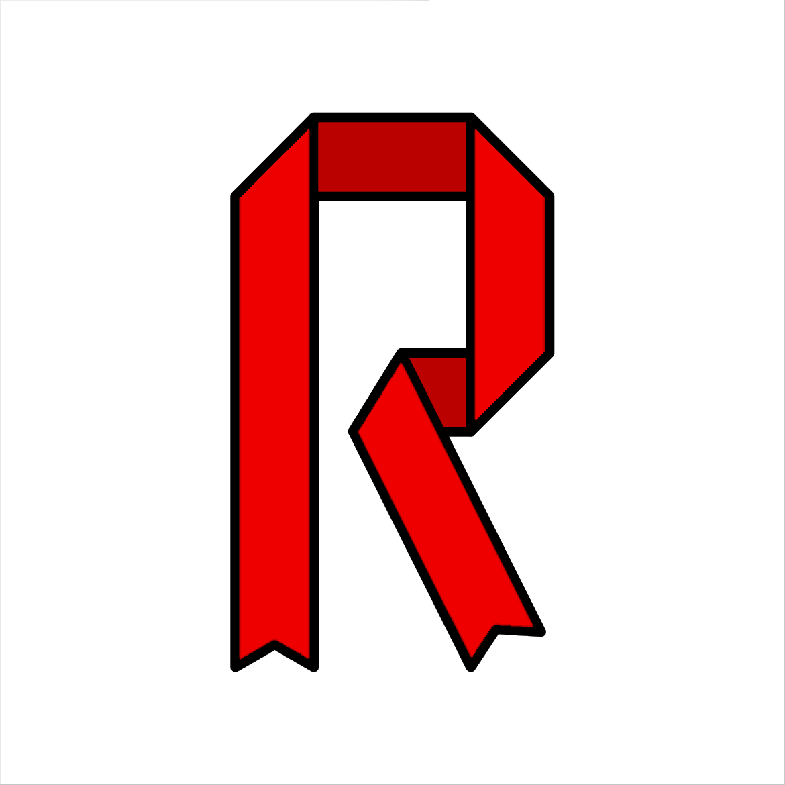

Introducing Ribbon, a new programming language!
Hello world!
My name is Gaelan, I'm a software engineer who's had his fair share of work experiences, hobby projects, interests, and ambitions. I've always imagined having a blog, so here we are! There's nothing to it but to do it!
I wanted to share with you a project that I have been brainstorming and working on for many years: Ribbon! It's a new programming language, one designed to be very easy to prototype in, like Python, but also provide robust mechanisms to support strong runtime guarantees, like Rust.
Ribbon is still in alpha, though I'm preparing for a beta release soon. Perhaps the quickest way for me to introduce it to you is with code samples. I've created three that hopefully show you what Ribbon is capable of.
Sample 1: For the data scientists
let halve(x) = x / 2
let halve_plus_one = halve + 1
let y = halve_plus_one( [1, 2, null, 4] )
let squared_y = y ^ 2
print(squared_y) // [2.25, 4, null, 9]
print(squared_y[# - 1]) // 9
As you can see, it is extremely flexible! I know you must have questions, so here's some technical details.
- Ribbon is designed to be statically typed, though it does support dynamic types to accommodate
the prototyping process. For example, in this case,
halvehas the inferred type<T: Numeric> (x: T) -> T. Yes, it is templated, but unlike C++, Ribbon supports calling templated functions when the type is only known at runtime. I'll discuss this process more in my next post. - Integers are a separate type from other numerics, such as rationals and reals, but they can all be implicitly converted between each other if the conversion is sound.
- Like Python, the integer type
Inthas infinite precision. There is also a rational type which also has infinite precision. However, there are also fixed-size variants, such asInt<32>. You'll see this in the next sample. halve_plus_oneis identical to the lambda(x) => halve(x) + 1. Pretty nifty, right? I'll discuss how it works in a future post.- Any operations or functions applied to lists (or iterables in general) are applied element-wise.
There is no ambiguity because operators only operate on lists or on non-lists, never both. For
example, the sum operator
+does not operate on lists, whereas the concatenation operator++only operates on lists. I'm glossing over some technical details that I'll discuss in another post sometime. - The
nullvalue is encapsulated by fallible types, denotedT?for some typeT. Be rest assured,nullis never a legal value in a non-fallible setting. I'll describenull, fallibility, and error-handling in general in a future post. - Yes, exponentiation is done with the
^operator, you're welcome. The operator for bitwise XOR (and bitwise NOT) is~. They're not ambiguous because one is unary and the other is binary. You should know that this idea is not mine, but Dennis Ritchie's, though I cannot find the source I originally heard this from. - The
# - 1in the index means what you think it means. The#operator refers to the length of the list, and subtracting one gives us the index of the last item. It is identical tosquared_y[#squared_y - 1], where the unary#operator returns the length of the list, just like Lua.
Do you like it? I hope you don't think of Ribbon as simply a revamped Python. There's a lot more work I've done to make it useful for other tasks, such as...
Sample 2: For the systems programmers
let XState : @Binary = (
state: Int<10>
flags: Bin<6>
)
let state = 0x208 + 42
let flags: Bin<6> = 0b11 ++ 0x6
// Like Rust, type hints (e.g. `Bin<6>`) are optional
let x = XState(state, flags)
let x_bin = Bin<16>(x)
Some more details:
- The
@Binarydirective tells Ribbon to pack the struct fields in the order presented (in little endian). In general, structs do not promise an exact layout unless a directive requires it. - Struct fields, and all other multi-line collections, do not need commas at the end of each line. They are inferred by newlines and indentation. I might make a post just about this feature; there's some interesting details.
- The binary type
Binis distinct from the integer typeInt. Notably:Binsupports addition and other non-bitwise numeric operations through an implicit conversion into anInt. The conversion back fromInttoBinmust be explicit.- Unlike
Bin,Intdoes not natively have bitwise operations nor concatenation (++). - Binary literals have an inferred type. For example,
0o000(octal) has the typeBin<9>. As a fun fact, integer literals (e.g.42) actually have a type ofBin(a binary number with arbitrarily many bits). They can of course be implicitly converted to anInt.
- Structs that have the
@Binarydirective can be converted intoBinand vice versa. - Sharp observers will notice that
++operates onBin, which implies thatBinis actually a list type! It is equivalent to an array of Booleans. For example,0xC4[2]equalstrue.
I have one more sample that explores some of the more technical ideas I have for Ribbon.
Sample 3: For the software engineers
let apply(
document: &Document
action: Action
history: &List<Action>
log: &List<Issue>
) -> (
size_change_kiB: Int
new_issues: List<Issue>
) = {
let (size_change, issues) = action.apply_to(&document)
&history.push(action)
&log.append(issues)
(size_change, new_issues: issues)
}
let undo_last_action(
document: &Document
history: &List<Action> and #_ > 0
log: &List<Issue>
) -> Action = {
let last_action = &history.pop()
last_action.undo_to(&document)
&log.push(Issue.new("Undid action \(last_action)"))
last_action
}
var (document, history, log) = load_document_history_and_logs()
let kiB = &document.apply(format_text, &history, &log).size_change
&document.undo_last_action(&history, &log)
print("Formatting will change the file size by \(kiB * 1024) bytes")
There's a lot here to unpack, so once more, I will try to answer as many questions as possible.
- The
&here is equivalent to Rust's&mut. - The return type of
applyis indeed an inline struct declaration! You're welcome. - Structs and tuples have been merged into tuples in Ribbon. I'll have to write about this too in another post.
- If an argument is passed to a mutable parameter, even if it is used as
self, it must have the&in front of it. This is to make all mutability apparent in the syntax. There's another advantage that I'll discuss in a future post. - Similar to the D language, notation like
a.b(c)is shorthand forb(a, c). - Similar to Rust, the final expression in a function body (or any block in general) is
its return value. The
returnkeyword is optional. - The parameter constraint
&List<Action> and #_ > 0has the meaning:- A mutable reference to a
List<Action> - With the precondition:
#_ > 0, i.e. its length must be positive. This expression is a lambda, identical to(x) => #x > 0. This is because_is the identity function, and operations can be applied to lambdas as shown earlier.
- A mutable reference to a
Yes, you see it right, Ribbon supports arbitrary preconditions for parameters and other declarations! For the time being, these are evaluated at runtime. But my plan (and it's a long plan) is that Ribbon will incorporate formal verification, similar to Ada, allowing for compile-time checks and optimization opportunities. Once again, I'll have to discuss it more in a future post.
Summary
I hope you're as excited about Ribbon as I am! There's more things I didn't have time to include here, like iterables and generators, fallibility, objects and traits (and inheritance), modules and dependencies, and much more. But I will mention that my goal for Ribbon is to be easier to prototype in than Python, while having stronger runtime guarantees than Rust. Do you think I'm on the right track?
As for my current progress, some the features I've shown here are already implemented in my interpreter written in Rust. This project of course is still in its alpha stage as I still have many bugs and holes in my implementation. I plan on releasing and open-sourcing it in the coming weeks, plus I'll continue posting more blog posts here each Friday.
Until then, take care! I'll see you next week when I'll discuss how Ribbon is both an interpreted and compiled language!
P.S. It seems a language becomes real when it has a logo, so I made this one today. Enjoy!
